무선설비기사 (2012-06-02 기출문제)
1과목: 디지털 전자회로
1. 다음 중 전원회로의 교류입력단과 직류부하단 사이의 기본 구성으로 적절한 것은?
- 교류입력단 - 정류회로 - 변압기 - 평활회로 - 정전압회로 - 직류부하단
- 교류입력단 - 변압기 - 정류회로 - 평활회로 - 정전압회로 - 직류부하단
- 교류입력단 - 정류회로 - 변압기 - 정전압회로 - 평활회로 - 직류부하단
- 교류입력단 - 변압기 - 정류회로 - 정전압회로 - 평활회로 - 직류부하단
(정답률: 65%)

2. 정전압 회로의 특성으로 가장 알맞은 것은?
- 입력전류가 변할 때 출력 전압은 일정하지 않다.
- 출력전압이 변할 때 부하 전류는 일정하다.
- 주위온도가 상승할 때 출력 전압은 일정하다.
- 부하가 변할 때 입력 전압은 일정하다.
(정답률: 67%)
3. 정전압 안정화 회로의 규격으로 적절하지 않은 것은?
- 직류 출력전압의 허용범위
- 직류 출력전류의 허용범위
- 입력 및 출력 임피던스의 허용범위
- 부하전류 변화에 따른 출력전압의 변동범위
(정답률: 56%)
4. 다음 그림과 같은 바이어스 회로에서 IC가 2[mA]이고 β가 50일 때 Rb의 값은? (단, VCC=10[V]이고 VBE=0.7[V]이다.)
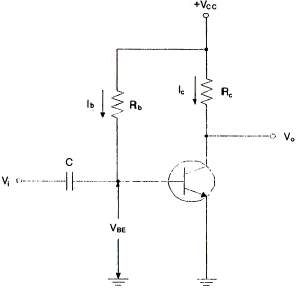
- 132.5[kΩ]
- 232.5[kΩ]
- 265[kΩ]
- 465[kΩ]
(정답률: 75%)
5. 다음 회로의 정현파 입력시 출력파형은 어느 것인가?
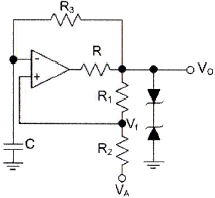
- 구형파
- 삼각파
- 톱니파
- 사인파
(정답률: 78%)
6. 다음은 부궤환 증폭 회로의 기본형이다. 옳은 명칭은 다음 중 어느 것인가?
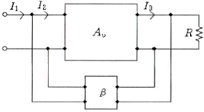
- 직렬 전압 궤환
- 직렬 전류 궤환
- 병렬 전압 궤환
- 병렬 전류 궤환
(정답률: 52%)
7. 푸시풀(push-pull) 전력증폭회로의 가장 큰 장점은?
- 우수 고조파 상쇄로 왜곡이 감소한다.
- 직류성분이 없어지기 때문에 효율이 크다.
- A급 동작시 크로스오버(cross over) 왜곡이 감소한다.
- 기수와 우수 고조파 상쇄로 효율이 증가한다.
(정답률: 71%)
8. 발진회로와 관계가 없는 것은?
- 부성저항
- 정궤환
- 부궤환
- 재생회로
(정답률: 62%)
9. 그림과 같은 수정편이 등가회로에서 L0=25[mH], C0=1.6[pF], R0=5[Ω], C1=4[pF]일 때 직렬 공진 주파수는? (단, π=3.14)
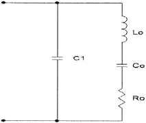
- 약 766.2[KHz]
- 약 776.2[KHz]
- 약 786.2[KHz]
- 약 796.2[KHz]
(정답률: 56%)
10. AM 복조(검파) 회로에서 직선 검파회로의 RC(시정수)가 반송파의 주기보다 짧은 경우에 일어나는 형상은?
- 충방전 특성이 늦어진다.
- 출력은 입력 전압의 반송파 진폭의 제곱에 비례하게 되며, 검파 감도가 높아지게 된다.
- 방전이 빨리 일어나서 저항 R의 단자 전압변동이 크게 일어난다.
- 포락선의 변화에 추종하지 못한다.
(정답률: 62%)
11. 그림과 같은 변조파형을 얻을 수 있는 변조방식에 대한 설명 중 옳은 것은?
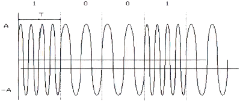
- 정현파의 주파수에 정보를 싣는 FSK 방식으로 2가지 주파수를 이용한다.
- 정현파의 진폭에 정보를 싣는 ASK 방식으로 2가지의 진폭을 이용한다.
- 정현파의 진폭에 정보를 싣는 QAM 방식으로 2가지의 진폭을 이용한다.
- 정현파의 위상에 정보를 싣는 2위상 편이변조방식이다.
(정답률: 77%)
12. CR 충방전 회로에서 상승시간(rise time)은 무엇인가?
- 출력전압이 최종값의 90[%]로부터 10[%]에 이르기까지 소요되는 시간
- 스위치를 넣은 후 출력전압이 최종값의 10[%]에서 90[%]까지 소요되는 시간
- 스위치를 넣은 후 출력전압이 최종값의 90[%]에서 100[%]까지 소요되는 시간
- 스위치를 넣은 후 출력전압이 최종값의 10[%]에 이르는데 소요되는 시간
(정답률: 85%)
13. 단안정 멀티바이브레이터는 다음 중 어떤 결합을 이용하는가?
- DC 결합
- AC 결합
- AC와 DC 결합
- 무결합
(정답률: 70%)
14. 십진수 10.375를 2진수로 변환하면?
- 1011.101(2)
- 1010.101(2)
- 1010.011(2)
- 1011.110(2)
(정답률: 74%)
15. 논리식 A(A+B+C) 를 간단히 하면?
- A
- 1
- 0
- A+B+C
(정답률: 77%)
16. 다음 게이트 중에서 fan-out이 가장 큰 것은?
- RTL 게이트
- TTL 게이트
- DTL 게이트
- DL 게이트
(정답률: 79%)
17. 비동기식 직렬 전송(UART)시 start bit와 stop bit의 신호 상태는?
- start bit : low, stop bit : high
- start bit : high, stop bit : low
- start bit : low, stop bit : low
- start bit : high, stop bit : high
(정답률: 62%)
18. 십진 BCD 코드를 LED 출력으로 표시하려면 어떤 디코더 드라이브가 필요한가?
- BCD-10세그먼트
- Octal-10세그먼트
- BCD-7세그먼트
- Octal-7세그먼트
(정답률: 84%)
19. 여러 개의 회로가 단일 회선을 공동으로 이용하여 신호를 전송하는데 필요한 장치는?
- 멀티플렉서
- 디멀티플렉서
- 인코더
- 디코더
(정답률: 82%)
20. 다음의 기억장치 중 보조기억장치가 아닌 것은?
- 자기 디스크
- RAM
- 자기 드럼
- 자기 테이프
(정답률: 67%)
2과목: 무선통신 기기
21. 200[W] 전력의 반송파를 사용하여 신호를 변조도 80[%]로 진폭변조하여 전송하고자 할 때 소요되는 총 전력은 몇 [W]인가?
- 218[W]
- 264[W]
- 286[W]
- 342[W]
(정답률: 75%)
22. 정보신호가 m(t)=cos(2πfmt) 인 정현파를 반송파 fc를 사용하여 SSB 변조하는 경우 변조된 신호의 스펙트럼을 모두 나타낸 것은?
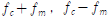
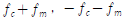
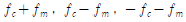
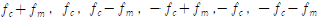
(정답률: 74%)
23. FM 신호에서 진폭의 변화를 제거하기 위한 방법으로 사용하는 것은?
- 경사 검파기(slope detector)
- 리미터(limiter)
- 위상동기루프(PLL)
- 등화기
(정답률: 86%)
24. DPSK(Differential Phase Shift Keying) 방식에 대한 설명으로 틀린 것은?
- BPSK 방식에 비해 BER(Bit Error Rate) 성능이 우수하다.
- 인코히어런트 방식의 일종이다.
- 인접데이터 간의 동일성 여부에 따라 변조파형이 정해진다.
- carrier 동기부(synchronize 부)가 불필요하다.
(정답률: 72%)
25. 구형파에서 펄스폭을 τ, 펄스주기를 T, 주파수를 f, 펄스의 첨두치를 P, 평균치를 A라고 하면 충격 계수(duty factor) D의 관계가 틀린 것은?
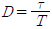
- D=τf
- D=Af
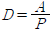
(정답률: 73%)
26. 다음 펄스식 레이더를 널리 사용하는 이유가 아닌 것은?
- 출력의 능률을 올릴 수 있다.
- 저주파로 이용할 수 있기 때문이다.
- 예민한 빔을 얻을 수 있어 방위 분해능을 높게 할 수 있다.
- 송신 펄스의 유지시간 내에 반사 펄스를 수신할 수 있어 상호 간섭이 없다.
(정답률: 72%)
27. 100 Watt의 출력신호를 isotropic 안테나로 방사한 후, 100[m] 떨어진 곳에서 수신하였다. 만약 0.1 Watt의 출력으로 송신하는 경우에 같은 거리에서 같은 정도의 수신전력을 얻고자 한다면 송신 안테나의 이득은 얼마가 되어야 하나?
- 100[dB]
- 10[dB]
- 30[dB]
- 20[dB]
(정답률: 63%)
28. 다음 그림은 입력신호에서 주파수와 위상을 추출하는 위상동기루프(PLL)를 나타낸다. 괄호에 들어가는 내용의 조합으로 적절한 것은?
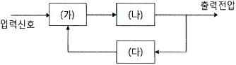
- (가) 위상검출기 (나) 저역통과필터 (다) 전압제어발진기
- (가) 위상검출기 (나) 전압제어발진기 (다) 저역통과필터
- (가) 전압비교기 (나) 고역통과필터 (다) 전압제어발진기
- (가) 전압비교기 (나) 전압제어발진기 (다) 저역통과필터
(정답률: 84%)
29. 심볼간 간섭(Intersymbol Interference)이 수신기에서 문제가 되는 상황은?
- 심볼지연확산이 심볼시간과 같거나 이보다 긴 경우
- 심볼지연확산이 심볼시간보다 훨씬 짧은 시간인 경우
- 심볼지연확산이 0인 경우
- 심볼지연확산 시간을 알 수 없는 경우
(정답률: 70%)
30. 다음 중 레이터 시스템의 구성요소가 아닌 것은?
- 송신가(transmitter)
- 수신기(receiver)
- 안테나(antenna)
- 블랙박스(black box)
(정답률: 90%)
31. 축전지 용량 감퇴의 직접적인 원인이 아닌 것은?
- 충전 전류나 방전 전류의 과대
- 충전의 불충분
- 백색 황산납의 발생
- 장기간 사용
(정답률: 74%)
32. 다음 중 UPS의 구성요소에 속하지 않는 것은?
- 출력필터부
- 증폭부
- 비상바이패스부
- static 스위치부
(정답률: 86%)
33. 다음 중 축전지의 백색 황산납 발생의 원인이 아닌 것은?
- 극판에 불순물이 혼합되었을 때
- 과도하게 충전할 때
- 방전한 대로 방치할 때
- 전해액의 비중이 너무 클 때
(정답률: 61%)
34. 다음 중 전원을 끊김 없이 공급할 수 있는 장치는?
- TRANSFORMER
- AVR
- CONVERTER
- UPS
(정답률: 88%)
35. 무선 전송 시스템에서의 페이드 마진(fade margin)을 측정하는데 필요하지 않은 것은?
- 무선 전송장치
- BER tester
- 멀티미터
- 컴퓨터 및 측정용 악세사리
(정답률: 56%)
36. 다음 중 수신기의 전기적 성능을 나타내는 지표로서 가장 적합한 것은?
- 변조도, 왜율, 안정도
- 감도, 선택도, 충실도
- 감도, 변조도, 점유주파수대폭
- 변조도, 왜율, 점유주파수대폭
(정답률: 85%)
37. 접지저항에 대한 다음 설명 중 틀린 것은?
- 공중선을 대지에 접지시킬 때 공중선과 대지 사이에 존재하게 되는 접촉저항이다.
- 접지저항을 크게 하기 위해 다점접지를 사용한다.
- 접지 공중선의 효율을 결정하는 중요한 요소이다.
- 코올라우시 브리지를 이용하여 측정할 수 있다.
(정답률: 83%)
38. 안테나 실효고 측정방법 중의 하나인 표준 안테나에 의한 방법에서 표준 안테나로 주로 사용되는 안테나는?
- 롬빅 안테나
- 야기 안테나
- 루프 안테나
- 브라운 안테나
(정답률: 83%)
39. 정류회로에서 평균값을 지시하는 가동코일형 직류 전류계를 사용하여 평균값을 측정하였더니 2.82[A]였고 맥류의 실효값을 지시하는 열전형 전류계를 사용하여 실효값을 측정하였더니 3.14[A]였다면 파형율은 얼마가 되는가?
- 0.9
- 1.1
- 0.32
- 6
(정답률: 66%)
40. 부하시 직류 출력전압이 100[V], 무부하시 직류 출력전압이 120[V]일 때 전압 변동율은 몇 [%]인가?
- 5[%]
- 10[%]
- 15[%]
- 20[%]
(정답률: 89%)
3과목: 안테나 공학
41. 위상속도에 대한 설명으로 맞지 않은 것은?
- 일정 위상자리가 이동하는 속도를 말한다.
- 위상속도와 군속도의 곱은 광속의 자승이 된다.
- 도파관 내에서 위상속도는 광속도보다 빠르다.
- 매질의 굴절률이 커지면 위상속도는 빨라진다.
(정답률: 66%)
42. 전자계에서 전계의 세기를 E, 자계의 세기를 H, 전계와 자계 사이의 각을 θ(θ＜90°)라고 할 때 포인팅(Poynting) 벡터의 크기는 어떻게 표시되는가?
- EH sinθ
- EH cosθ
- EH tanθ
- EH
(정답률: 75%)
43. 유전체에서 변위전류를 발생하는 것은?
- 분극 전하밀도의 시간적 변화
- 분극 전하밀도의 공간적 변화
- 전속밀도의 시간적 변화
- 전속밀도의 공간적 변화
(정답률: 85%)
44. 손실을 가진 전송선로의 전파정수 r=1+j3이고, 각속도 ω=1[Mrad/s]이다. 선로의 특성 임피던스 Z0=30+j0[Ω]이었을 때, 저항 R과 인덕턴스 L의 값을 계산하면?
- R=20[Ω/m], L=80[μH/m]
- R=20[Ω/m], L=90[μH/m]
- R=30[Ω/m], L=80[μH/m]
- R=30[Ω/m], L=90[μH/m]
(정답률: 71%)
45. 급전선의 임피던스 Z0=Ro+jXo와 부하의 임피던스 ZL=RL+jXL에서 Ro, RL, Xo, XL이 어떤 관계에 있을 때 임피던스 정합이 됐다고 하는가?
- Ro = RL, Xo = XL
- Ro = RL, Xo = -XL
- Ro = -RL, Xo = XL
- Ro = -RL, Xo = -XL
(정답률: 84%)
46. 도파관의 임피던스 정합 방법으로 맞지 않는 것은?
- 스터브에 의한 방법
- 창에 의한 방법
- 1/2 파장 변성기에 의한 방법
- 도체봉에 의한 방법
(정답률: 70%)
47. 다음 중 스미스 선도(Smith chart)로서 구할 수 있는 것은?
- 증폭도 계산
- 데시벨 계산
- 직선성 계산
- 임피던스 정합회로 계산
(정답률: 77%)
48. 지름 3[mm], 선 간격 30[cm]의 평행2선식 급전선의 특성 임피던스는 얼마인가? (단, 비유전율은 1이다.)
- 약 300[Ω]
- 약 530[Ω]
- 약 637[Ω]
- 약 723[Ω]
(정답률: 56%)
49. 수평면내 지향특성은 단향성이며, 광대역이고, 수신주파수가 변화되어도 지향성은 변화하지 않으며, 주로 수신용으로 사용하는 안테나는?
- 야기안테나
- 수평 Dipole 안테나
- 비임안테나
- 웨이브안테나
(정답률: 59%)
50. 수직접지 안테나의 높이가 λ/4보다 높다. 이 경우 안테나의 방사저항은 어떻게 될까?
- λ/4인 경우보다 커진다.
- λ/2인 경우보다 작아진다.
- λ/4와 같다.
- 0
(정답률: 68%)
51. 다음은 파라볼라 안테나의 이득에 대한 설명이다. 틀린 것은?
- 이득은 개구면에 비례한다.
- 개구면적과 이득과는 전혀 관계가 없다.
- 파장이 짧을수록 이득은 커진다.
- 개구효율이 클수록 이득도 커진다.
(정답률: 64%)
52. 안테나 파라미터와 가장 관계가 적은 것은?
- 고유주파수
- 안테나 효율
- 실효고와 복사저항
- 공진주파수
(정답률: 61%)
53. 다음 중 VHF 대역에서, 통신 가능 거리를 증가시키기 위한 방법으로 적합하지 않은 것은?
- 안테나 높이를 높인다.
- 이득이 높은 안테나를 사용한다.
- 지향성이 예리한 안테나를 사용한다.
- 안테나의 방사각도를 크게 한다.
(정답률: 87%)
54. 다음 중 절대이득과 상대이득, 지상이득과의 관계를 옳게 표현한 것은?
- 절대이득[dB]=상대이득[dB]×1.64
- 절대이득[dB]=상대이득[dB]×2.56
- 절대이득[dB]=지상이득[dB]×3.68
- 절대이득[dB]=지상이득[dB]×5.15
(정답률: 87%)
55. 자기람 현상에 대한 설명으로 틀린 것은?
- F2층의 임계 주파수에 영향을 미친다.
- 극지방에서부터 발생하여 저위도 지방으로 서서히 퍼진다.
- 1.5~20[MHz]의 단파통신에 영향을 준다.
- 주야간 구별없이 나타난다.
(정답률: 41%)
56. 지표면에서 전리층을 향해 수직으로 펄스파를 발사한 후 2[ms] 후에 생기는 반사파는 어느 전리층에서 반사한 것인가?
- D층
- E층
- Es층
- F층
(정답률: 80%)
57. 다음 중 전자파 잡음 방해의 개선방법으로 적합하지 않은 것은?
- 인공잡음을 경감시킨다.
- 내부잡음 전력을 감소시킨다.
- 수신기의 대역폭을 넓힌다.
- 지향성 안테나의 사용 등에 의한 수신 신호전력을 크게한다.
(정답률: 83%)
58. 회절이 발생하지 않았을 때의 수신 전계강도를 E0, 회절이 발생했을 때의 수신 전계강도를 Ed라 하면, 회절계수는?
- E0/Ed
- Ed/E0
- (E0/Ed)2
- (Ed/E0)2
(정답률: 58%)
59. 초가시거리 전파의 종류로 옳지 않은 것은?
- Radio duct 전파
- 전리층 산라파 전파
- 산악 회절 전파
- 이상파
(정답률: 66%)
60. 겉보기 높이가 2배가 될 때 도약거리의 변화는?
- 불변
- 제곱 비례
- 정비례
- 반비례
(정답률: 60%)
4과목: 무선통신 시스템
61. 다음 중 디지털 통신에서 펄스 성형(pulse shaping)을 하는 주된 이유로 가장 적합한 것은?
- 노이즈를 줄이기 위함
- 다중접속을 용이하게 하기 위함
- 심볼간 간섭(ISI)를 줄이기 위함
- 채널 대역폭을 증가시키기 위함
(정답률: 88%)
62. 슈퍼헤테로다인 수신기에서 중간 주파수를 낮게 선정할 때의 장점에 해당되지 않는 것은?
- 충실도가 좋아진다.
- 근접 주파수 선택도가 개선된다.
- 단일조정이 쉬워진다.
- 감도 및 안정도가 향상된다.
(정답률: 53%)
63. 다음 중 디지털 통신시스템의 성능 평가에 가장 적합한 것은?
- 왜율
- C/I
- BER
- S/N
(정답률: 83%)
64. 다음은 W-CDMA 망구성 중 무엇에 대한 설명인가?
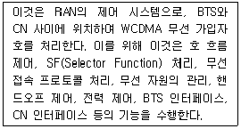
- URM(UTMS RAN Manager)
- BTS(Base station Transceiver System): Node B
- CN-EMS(Core Network-Element Management System)
- RNC(Radio Network Controller)
(정답률: 56%)
65. PCM 다중통신에서 발생하는 지터(Jitter) 현상에 대한 설명으로 잘못된 것은?
- 펄스열이 왜곡되어 타이밍 펄스가 흔들려서 발생한다.
- 타이밍 회로의 동조가 부정확하여 발생한다.
- 타이밍 편차 또는 지터 잡음이라 한다.
- 양자화 오차에서 발생되는 잡음이다.
(정답률: 75%)
66. 다음 중 CDMA 시스템 용량에 대한 설명으로 틀린 것은 무엇인가?
- 동시 사용자수는 시스템 처리 이득에 비례한다.
- 적절한 품질을 유지하기 위한 통신로의 Eb/No 기준값이 증가할수록 시스템 용량은 증가한다.
- 인접 셀의 사용자의 부하를 줄일수록 시스템 용량은 증가한다.
- 음성활성화 계수 작을수록 시스템 용량은 증가한다.
(정답률: 79%)
67. 4세대 이동통신 시스템이 효율성과 차별성을 위해 고려하고 있지 않는 것은?
- 셀 커버리지 증대
- 주파수 효율성
- 전송율 최적화
- 좁은 대역폭 추구
(정답률: 83%)
68. 위성 통신에서 하나의 트랜스폰더를 여러 지구국이 공용할 수 있도록 트랜스폰더의 주파수 대역폭을 분할하여 지구국이 서로 다른 주파수 채널을 사용하도록 하여 여러 지구국이 위성을 공유하는 방식의 다원접속 방식은?
- FDMA
- TDMA
- CDMA
- SDMA
(정답률: 75%)
69. WCDMA 시스템에서 기지국은 핸드오버를 위하여 인접 셀의 정보를 단말에게 통지한다. 이 경우 통지 가능한 최대 셀의 개수는 몇 개인가?
- 15개
- 20개
- 31개
- 63개
(정답률: 81%)
70. 현재 사용되고 있는 RFID 주파수대역이 아닌 것은?
- 13.56[MHz]
- 900[MHz]
- 2.1[GHz]
- 2.45[GHz]
(정답률: 48%)
71. 다음 중 전송속도가 상대적으로 가장 빠른 통신 표준은?
- IEEE 802.11n
- IEEE 802.15.4a
- HSDPA
- 1x EV d0 rev. A
(정답률: 74%)
72. 다음 중 전송할 데이터를 같은 크기의 작은 블록(block)으로 잘라 주고 분리된 데이터를 원래의 메시지로 복원하는 프로토콜 기능은 어느 것인가?
- 순서 결정(sequencing)
- 세분화와 재합성(segmentation and reassembly)
- 구분과 결합(delineation and combination)
- 전송 서비스(transmission service)
(정답률: 88%)
73. 다음 중 OSI 7계층에서 데이터링크 계층의 역할(기능)이 아닌 것은?
- 오류제어
- 흐름제어
- 경로설정
- 데이터의 노드 대 노드 전달
(정답률: 69%)
74. 무선랜 단말기 상호간 무선 구간에서의 충돌 방지를 위해 사용하는 IEEE 802.11의 방식은?
- CSMA/CD
- CSMA/CA
- TDMA/TDD
- Token Passing
(정답률: 80%)
75. 다음 중 통신 프로토콜에 대한 개념으로 가장 옳은 것은?
- 두 통신시스템상의 개체(entity) 간에 정확하고 효율적인 정보전송을 위한 일련의 규약이다.
- 하나의 통신로를 다수의 가입자들이 동시에 사용 가능하게 하는 기능이다.
- 전송도중에 발생 가능한 오류들을 검출하고 정정하는 기능이다.
- IP 주소를 할당 및 분배하는 기능이다.
(정답률: 88%)
76. OSI 7계층 중 하나인 데이터링크 계층에서 사용되는 데이터 전송단위는?
- bit
- frame
- packet
- message
(정답률: 73%)
77. 방송국의 공중선 전력이 5[kW]에서 20[kW]로 증가되면 전계 강도는 몇 배가 되는가?
- 16배
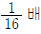
- 2배
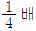
(정답률: 66%)
78. 다음 중 무선망 최적화 수행사항이 아닌 것은?
- 커버리지 확보
- 절단율 개선
- 기지국 용량 증대
- 통화량 균등 분배
(정답률: 61%)
79. 전지 전자장비로부터 불요전자파가 최소화 되도록 함과 동시에 어느 정도의 외부 불요전자파에 대해서는 정상동작을 유지할 수 있는 능력을 갖고 있는지 설명하는 용어는?
- EMI
- EMP
- EMC
- EMS
(정답률: 75%)
80. 통신시스템이 고장이 난 시점부터 그 다음 고장이 나는 시점까지의 평균시간을 무엇이라고 하는가?
- MTTC
- MTTR
- MTBF
- MTAF
(정답률: 77%)
5과목: 전자계산기 일반 및 무선설비기준
81. 마이크로프로그램에 의한 각 기계어 명령들은 제어 메모리에 있는 일련의 마이크로 오퍼레이션의 동작을 시작하는데 다음 중 맞지 않는 동작은?
- 주기억 장치에서 명령어 인출하는 동작
- 오퍼랜드의 유효 주소를 계산하는 동작
- 지정된 연산을 수행하는 동작
- 다음 단계의 주소를 결정하는 동작
(정답률: 73%)
82. 2진수 0000000001111100의 2의 보수 값은 얼마인가?
- 1111111110000100
- 1111111110000011
- 1111111110000110
- 1111111110000010
(정답률: 59%)
83. 다음 보기는 프로그램 종류에 관련된 문항이다. 틀린 것은? (문제 오류로 실제 시험에서는 2, 3번이 정답처리 되었습니다. 여기서는 3번을 누르면 정답 처리 됩니다.)
- 베타버전이란 개발자가 상용화하기 전에 테스트용으로 배포하는 것을 말한다.
- 쉐어웨어란 기간이나 기능 제한 없이 무료로 사용하는 것을 말한다.
- 데모버전이란 기간이나 기능의 제한 없이 무료로 사용하는 것을 말한다.
- 테스트버전이란 데모버전 이전에 오류를 찾기 위해 배포하는 것을 말한다.
(정답률: 46%)
84. CPU가 무엇인가를 하고 있는가를 나타내는 상태를 메이저 상태라고 하는데 다음 중 메이저 상태의 종류에 해당되지 않는 것은?
- Fetch 상태
- Indirect 상태
- Timing 상태
- Interrupt 상태
(정답률: 59%)
85. 다음 지문의 괄호 안에 들어갈 용어는?
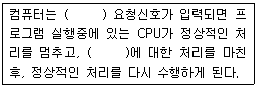
- Recursive
- DUMP
- DMA
- Interrupt
(정답률: 88%)
86. 주소영역(address space)이 1[GB]인 컴퓨터가 있다. 이 컴퓨터의 MAR(memory address register)의 크기는 얼마인가?
- 30 비트
- 30 바이트
- 32 비트
- 32 바이트
(정답률: 70%)
87. 인터럽트의 처리과정에서 인터럽트 처리 프로그램(Interrupt handling program)으로 이전하기 전에 시스템 제어 스택(system control stack)에 저장해야 할 정보는 무엇인가?
- 현재의 프로그램 계수기(program counter)의 값
- 이전에 수행하던 프로그램의 명칭
- 인터럽트를 발생시킨 장치의 명칭
- 인터럽트 처리 프로그램의 시작 주소
(정답률: 79%)
88. 16진수 BEAD에서 숫자 E 자리의 가중치(weighted value)는 얼마인가?
- 10
- 16
- 32
- 256
(정답률: 64%)
89. 다음 중 주소지정방식에 대한 설명으로 틀린 것은?
- 직접주소지정방식에서 오퍼랜드는 실제 주소 값이다.
- 간접주소지정방식은 최소 두 번 메모리에 접속해야 실제 데이터를 가져온다.
- 즉시주소지정방식에서 오퍼랜드는 실제 데이터 값이다.
- 레지스터주소지정방식은 프로그램카운터(PC)와 관련이 있다.
(정답률: 55%)
90. 마이크로프로세서의 명령어 실행과정 중, 데이터가 기억장치에 저장되어 있다면, 명령어는 데이터가 저장된 기억장치 주소를 포함한다. 그러나 명령어에 포함되는 주소가 데이터의 주소를 저장하고 있는 기억장치 주소라고 한다면, 실행되기 전에 주소를 기억장치로부터 읽어와야 한다. 이러한 과정을 무엇이라고 하는가?
- 인출 사이클
- 실행 사이클
- 간접 사이클
- 직접 사이클
(정답률: 56%)
91. 다음 ( ) 안에 들어갈 내용으로 가장 적합한 것은?
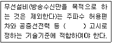
- 교육과학기술부장관
- 한국방송통신전파진흥원장
- 방송통신위원회
- 지식경제부장관
(정답률: 49%)
92. 다음 중 “지구국”에 대한 전파법의 정의로 맞는 것은?
- 인공위성을 개설하기 위해 필요한 무선국
- 우주국 및 지구국으로 구성된 통신망의 총체
- 우주국과 통신을 하기 위하여 지구에 개설한 무선국
- 지구를 둘러싼 전리층에서 지구표면으로 전파를 발사하는 무선국
(정답률: 90%)
93. 심사에 의한 주파수할당시 고려사항과 거리가 먼 것은?
- 전파자원 이용의 효율성
- 전파자원 이용의 편리성
- 신청자의 재정적 능력
- 신청자의 기술적 능력
(정답률: 62%)
94. “30[GHz]를 초과하고 300[GHz] 이하”인 주파수대를 미터법에 의해 구분하면 무엇인가?
- 데시미터파
- 센티미터파
- 밀리미터파
- 데시밀리미터파
(정답률: 75%)
95. 다음 중 지상파 DMB방송용 무선설비의 기술기준에서 방송신호 구성요소에 해당하지 않는 것은?
- 오디오 서비스 신호
- 비디오 서비스 신호
- 데이터 서비스 신호
- 파이롯 서비스 신호
(정답률: 87%)
96. “주파수를 회수하고 이를 대체하여 주파수 할당, 주파수 지정 또는 주파수 사용승인을 하는 것”을 무엇이라 하는가?
- 주파수 사용승인
- 주파수 재배치
- 주파수 회수
- 주파수 분배
(정답률: 81%)
97. 방송통신위원회가 전파자원을 확보하기 위하여 시책의 마련 및 시행하는 사항과 가장 거리가 먼 것은?
- 주파수의 국제등록
- 이용중인 주파수의 이용효율 향상
- 국가 간 전파혼신의 해소와 방지를 위한 협의ㆍ조정
- 국가 간 무선국 현황 파악 및 통계조사
(정답률: 66%)
98. 위상변조(PM)에 의한 무선전화를 나타내는 것은?
- G3C
- G3E
- P3E
- P3C
(정답률: 60%)
99. 무선국 정기검사시 대조검사 사항이 아닌 것은?
- 시설자
- 설치장소
- 무선종사자의 배치
- 점유주파수대폭
(정답률: 39%)
100. 무선설비의 운용을 위한 전원의 전압변동률은 정격전압의 몇 [%] 이내로 유지하여야 하는가?
- ±1[%]
- ±5[%]
- ±10[%]
- ±15[%]
(정답률: 84%)
전원회로에서는 교류입력단에서 입력된 교류전압을 변압기를 통해 적절한 전압으로 변환한 후, 정류회로를 통해 교류전압을 직류전압으로 변환합니다. 이후 평활회로를 통해 직류전압을 안정화시키고, 정전압회로를 통해 필요한 전압을 설정합니다. 마지막으로 직류부하단에서는 이러한 전압을 이용하여 직류부하를 구동합니다. 따라서, "교류입력단 - 변압기 - 정류회로 - 평활회로 - 정전압회로 - 직류부하단"이 전원회로의 기본 구성입니다.